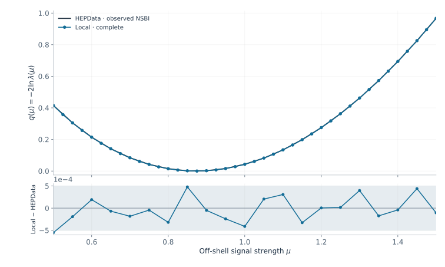
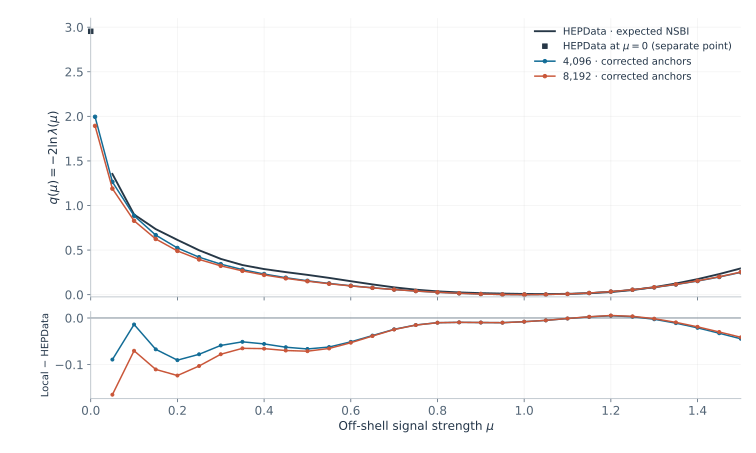
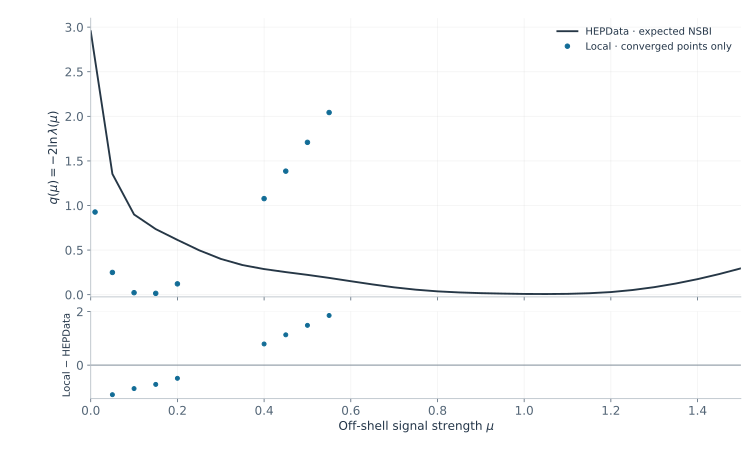
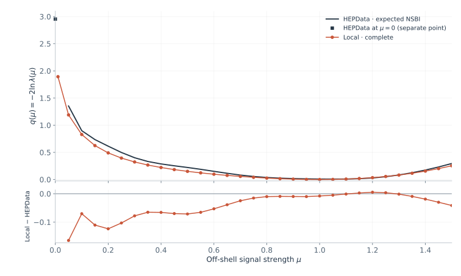

Observed data
0.87314
Fitted signal strength μ̂.
Published scan reproduced.
H* → ZZ → 4ℓ · reference-sample study
Validating the observed workspace, then testing
Asimov samples with normalized systematic anchors.
Fitted signal strength μ̂.
Published scan reproduced.
Nominal + up/down anchors normalized.
Nominal + up/down anchors normalized.
A frozen results snapshot, not a live job monitor. Use ← → to navigate; Esc for an overview.
Baseline / observed workspace

HEPData Table 2 · Obs NSBI, stat+syst, 4ℓ only. No shifts, interpolation, or rescaling.
Construction / reference samples
uᵢ = wᵢ / ∑w
Zₚ = ∑uᵢ rₚᵢ
r̂ₚᵢ = rₚᵢ / Zₚ
Generate at μ = 1, α = 0,
and all qqZZ factors = 1.
| Quantity | 4,096 | 8,192 |
|---|
Full physical yields stay fixed. Signed weights are retained. Up/down anchors now close to their supplied physical rates.
The NumPy physics inputs differ from the observed ROOT template, including some yields and systematics. The template supplies the structure.
Discussion / why did μ̂ move?
| Channel | Asimov count | Model expectation | Difference |
|---|
With α fixed to zero and all qqZZ factors free, μ̂ ≈ 0.99996 (4,096) and 0.99998 (8,192). The nominal μ score is numerically zero.
At generation, ∂NLLA = ∂ν − ∑uᵢ ∂Iᵢ. For the old 8,192 HOQCD_1Jet direction: 4.62077 − 3.19025 = 1.43053, matching the nonzero native score.
Nominal same-sample normalization alone does not impose stationarity in all 127 systematic directions. The Gaussian constraints and Asimov CRs have zero score at generation.
Discussion / preserve shape and physical rate
Cₚₖ = ∑ᵢ uᵢ r̂ₚᵢ vₚₖᵢ
v′ₚₖᵢ = vₚₖᵢ Rₚₖ / Cₚₖ
∑ᵢ uᵢ r̂ₚᵢ v′ₚₖᵢ = Rₚₖ
R comes from list_weight_up/down_<process>.npy. The target is the physical rate factor, which can differ from one.
Apply separately to each subset, each direction, all 127 nuisances, and all 10 SR components, including the three conditional qqZZ jet bins.
Every corrected up/down integral closes to its target within 9 × 10⁻¹⁵ relative precision.
Reuse the exact event rows, signed weights, nominal ratios and yields, Asimov CRs, constraints, bounds, and interpolation.
Discussion / the effect of the correction
| Reference events | Before · nominal only | After · nominal + anchors | After · μ̂ − 1 |
|---|
* The old 4,096 estimate is a known higher local minimum. A later profile improved NLL by 86.162, invalidating that baseline. The old runs were stopped and preserved; the corrected experiment starts from new workspaces.
The old 8,192 estimate was 1.10436. Both new minima lie about 0.1–0.2% above the generation value. The scans now test how well these corrected finite samples reproduce the published curve.
Fits / corrected Asimov workspaces
| Reference events | μ̂, start at 1.0 | μ̂, start at 1.4 | |ΔNLL| between starts | MIGRAD covariance |
|---|
Selected μ̂ = .
Displacement from one: .
Selected μ̂ = .
Displacement from one: .
Local scan: [0.01, 1.5]. The published μ = 0 point is shown separately. Original unconditional bounds are retained.
Expected profiles / both corrected samples

HEPData Table 2 · Exp NSBI, stat+syst, 4ℓ only. The published zero is an isolated marker; no reference value is inferred at our μ = 0.01 point.
Expected profile / 4,096 reference events

The published point at μ = 0 is separate from our μ = 0.01 proxy. Residuals use exact shared coordinates only.
Expected profile / 8,192 reference events

q = 2[NLLprofile(μ) − NLLminimum]. The published curve is used as tabulated, including its nonzero sampled minimum.
Comparison / published expected NSBI
| Reference events | Maximum |Δq| | RMS Δq | μ at largest residual | Local q(0.01) |
|---|
q(μ) = 2[NLLprofile(μ) − NLLcontinuous minimum]. Profile all 127 systematic parameters and all 3 qqZZ factors.
No shifting, rescaling, or reference interpolation. The published sampled minimum is nonzero. Our μ = 0.01 has no exact published counterpart.
The corrected 4,096 curve is closer to HEPData for these particular selections. Residuals can reflect finite sampling, incomplete nuisance-dependent normalization, and differences in the physics inputs; two nested subsets do not separate those effects.
Parameters / inspect the corrected fit
| Systematic parameter · ATLAS prefix omitted | α̂ · 4,096 | α̂ · 8,192 |
|---|
All 127 systematic parameters remain in [−5, 5]. All three cumulative qqZZ factors remain free.
Download all fitted parameters, bounds, and the available error estimates for later reference.
Parameter CSVs contain MIGRAD error estimates. No explicit full Hesse calculation was run for these corrected fits.
Closure / before and after
SR mismatch = (∑uᵢ Iᵢ − ν) / ν, evaluated at the fitted parameters.
| Reference events | Before · first start | After · selected fit | Largest |α̂| after |
|---|
Each component’s nominal and up/down integrals now agree with the model’s physical rates on that same reference subset.
Nonlinear interpolation and simultaneous nuisance variations can change the integral between the corrected anchors.
The old 4,096 first-start solution is a known higher local minimum. This table diagnoses normalization; it does not validate that old scan.
Interpretation / exact closure versus approximation
The remaining displacement is small, but an exact minimum at μ = 1 is not guaranteed by this correction.
| Reference events | Nominal-only normalization | Nominal + anchor normalization |
|---|
Event factors use PiecewiseInterpolation code 5; rate factors use FlexibleInterpVar code 4. Their nonlinear interpolation and products are not normalized at every point.
The shape-only example motivates full nuisance-dependent normalization. Our inputs mix shape and rate, so the supplied physical rate must be retained separately.
arXiv:2609.30196, §4.2.1 and §5.5. The 8,192 sample retains two negative weights; positive-weight global-maximum arguments need separate care here.
Validation / likelihood and profile checks
Extended RooFit likelihood, SR + 3 control regions, Gaussian constraints counted once. No SumW2 correction.
Native and explicit ΔNLL agree within 2.7 × 10⁻¹⁰ at every profile point. Construction and global checks also pass.
Positivity is checked at the actual fitted points. A nuisance vector need not stay physical at every other μ.
All 31 coordinates converge; overlaps agree within 2.5 × 10⁻⁵ in q. Workspace checksums are unchanged.
The figures show a likelihood scan, not confidence intervals. The publication uses Neyman confidence belts; q = 1 is not its 68% belt.
Execution / measured Slurm accounting
| Events | Stage | Elapsed | Total CPU minutes | Peak RSS / job |
|---|
Elapsed time spans the first start to the last finish in each stage. CPU time sums the jobs. Peak RSS is the largest individual job’s measured peak, not total simultaneous memory.
Global stage: construction from staged inputs, two starts, and checks; no full Hesse. Finalization: merge, figures, and independent validation. Initial input staging, ROOT installation, and queue time before the first start are excluded. Different nodes were used; this is not a controlled hardware benchmark. Measurements · Slurm definitions.
Downloads / reproducible results
Navigation: ← → / Space · Overview: Esc · Full screen: F · Browser print: append ?print-pdf to this page’s URL.